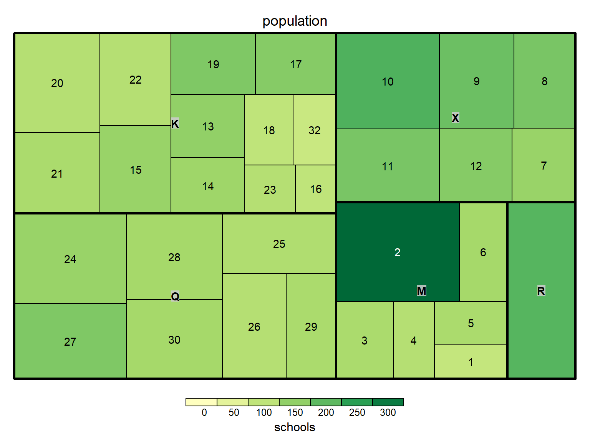

Chapter 4 Results
4.1 Graph 6
 To have a better understanding of number of crimes in each category at different geographical districts, we decided to make a Cleveland dot plot as the number of crimes is discrete data. We separated different categories of crimes by color for easier interpretation. As you can see from the graph, for most of the districts, non-criminal crime is the dominant category, followed by other crime, property crime, violent crime, and major crime, in that order respectively. From the graph, we can also learn about which districts have higher number of crimes regarding different categories. We can see that District 2, 31, and 10 have much higher number of crimes in most categories than the rest of the districts.
To have a better understanding of number of crimes in each category at different geographical districts, we decided to make a Cleveland dot plot as the number of crimes is discrete data. We separated different categories of crimes by color for easier interpretation. As you can see from the graph, for most of the districts, non-criminal crime is the dominant category, followed by other crime, property crime, violent crime, and major crime, in that order respectively. From the graph, we can also learn about which districts have higher number of crimes regarding different categories. We can see that District 2, 31, and 10 have much higher number of crimes in most categories than the rest of the districts.
4.2 Graph 7
 We would also like to see how number of crimes in each category changes overtime. We then decided to make time series plot to observe the change in number of crimes in each category. We used different color for different categories of crimes for easier interpretation with faceting on boroughs. The reason why we decided to faceting on boroughs instead of geographical districts is because there are over 30 districts while there are only 5 boroughs, which would make the graph less crowded. From the graph, we can see that for most of the boroughs the top category of crime is non-criminal crime, followed by other crime, property crime, violent crime, and major crime, in that order respectively. We can also observe that Brooklyn has higher number of crimes in most categories comparing to other boroughs followed by Bronx. For most categories of crimes, the number of crimes did not change much over the years. For number fo non-criminal crimes in Brooklyn and Bronx, it does seem like there is an upward trend over the years.
We would also like to see how number of crimes in each category changes overtime. We then decided to make time series plot to observe the change in number of crimes in each category. We used different color for different categories of crimes for easier interpretation with faceting on boroughs. The reason why we decided to faceting on boroughs instead of geographical districts is because there are over 30 districts while there are only 5 boroughs, which would make the graph less crowded. From the graph, we can see that for most of the boroughs the top category of crime is non-criminal crime, followed by other crime, property crime, violent crime, and major crime, in that order respectively. We can also observe that Brooklyn has higher number of crimes in most categories comparing to other boroughs followed by Bronx. For most categories of crimes, the number of crimes did not change much over the years. For number fo non-criminal crimes in Brooklyn and Bronx, it does seem like there is an upward trend over the years.
4.3 Graph 8
To understand the association between categories of crimes and boroughs over the years, we made a mosaic plot. The result is similar to what we expected based on the result from the previous plot. We can observe that for almost all the boroughs the top category of crime is non-criminal crime, followed by other crime, property crime, violent crime, and major crime, in that order respectively. From the graph, now we can also observe the differences in total number of crimes among the boroughs by looking at the width of each bar. Lastly, we can notice the proportions regarding different categories of crimes and total number of crimes among the boroughs did not really change much over the years.
4.4 Graph 9
 As there might be different numbers of schools in each location, we thought we could also examine the underlying structure of schools among different boroughs by making bar charts to see the frequency count of the number of schools in each location over the years. As expected, we can observe that for all the boroughs, most of the locations only include one school, but it is also interesting to see that there are 10 schools at some of the locations. We can also see that the frequency count does not really change over the years, meaning that the existing locations did not have much changes and there might be limited new locations.
As there might be different numbers of schools in each location, we thought we could also examine the underlying structure of schools among different boroughs by making bar charts to see the frequency count of the number of schools in each location over the years. As expected, we can observe that for all the boroughs, most of the locations only include one school, but it is also interesting to see that there are 10 schools at some of the locations. We can also see that the frequency count does not really change over the years, meaning that the existing locations did not have much changes and there might be limited new locations.
4.5 Graph 10
## Importance of components:
## PC1 PC2 PC3 PC4 PC5 PC6 PC7
## Standard deviation 2.338 0.82173 0.64171 0.52793 0.28416 0.27190 0.11182
## Proportion of Variance 0.781 0.09646 0.05883 0.03982 0.01153 0.01056 0.00179
## Cumulative Proportion 0.781 0.87747 0.93630 0.97612 0.98765 0.99821 1.00000## PC1 PC2 PC3 PC4 PC5 PC6 PC7
## Major.N 0.358 -0.451 0.429 -0.535 0.024 0.291 -0.336
## Oth.N 0.407 -0.018 -0.212 0.453 0.378 -0.158 -0.645
## NoCrim.N 0.394 0.014 -0.499 0.039 -0.688 0.344 -0.048
## Prop.N 0.376 0.025 0.551 0.582 -0.040 0.272 0.374
## Vio.N 0.391 -0.287 -0.429 -0.167 0.486 0.009 0.562
## X..Schools 0.411 0.040 0.176 -0.146 -0.316 -0.815 0.112
## Register 0.296 0.843 0.062 -0.344 0.214 0.181 -0.018 To understand how the variables contribute to the total variance and how they are related to each other, we decided to conduct principle components analysis (PCA). We picked a few important variables to conduct the analysis, including total number of crimes for each crime categories, total number of schools, and total number of registered students for each geographical districts. From the PCA table, we can observe that the first two principal components capture around 88% of the total variance, which is relatively high. We also display the specific linear combination of variables for each principal component for additional information. We then drew a biplot for further interpretation. From the graph, we can see that total number of students is surprisingly uncorrelated with most of the other variables as we expected that higher number of students would also indicate higher number of crimes. We can also observe that total number of schools, non-criminal crimes, property crimes, and other crimes are highly positively correlated, while total number of violent crimes and major crimes are highly correlated.